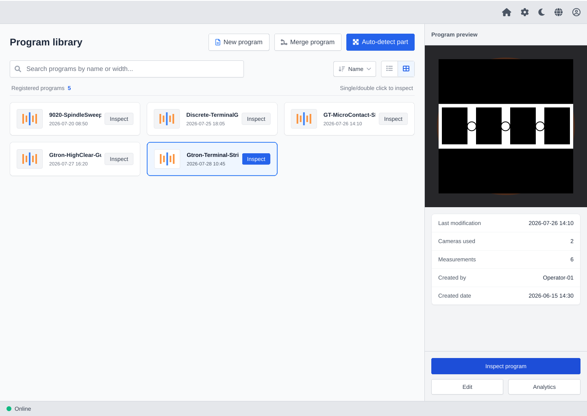
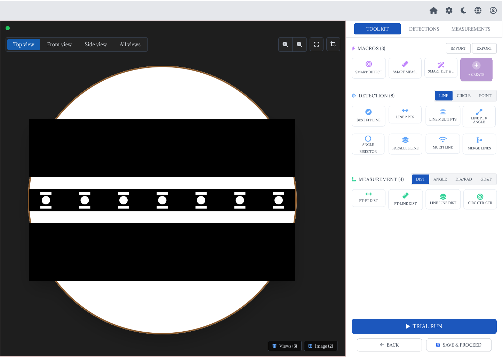
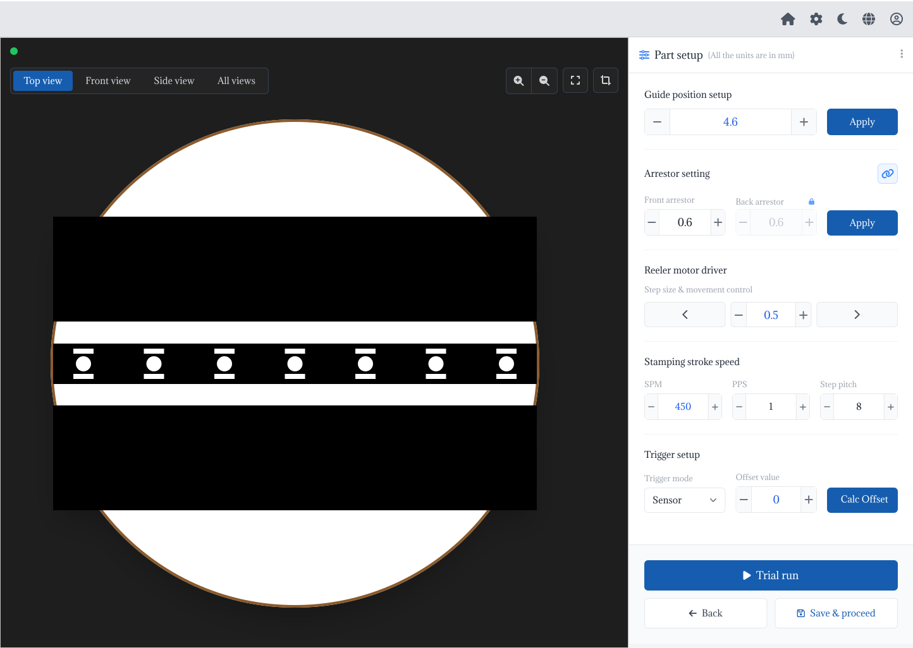
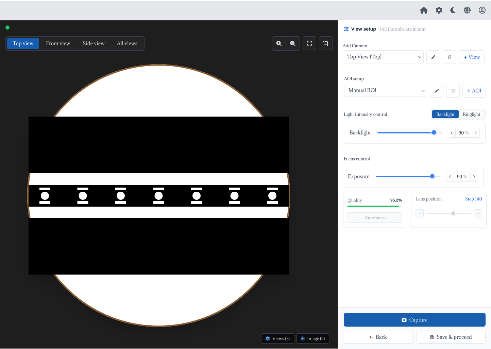

I design intuitive, production-focused interfaces for complex industrial systems, bridging user needs, machine workflows, and engineering constraints.




Designing a clear and scalable configuration experience for an industrial vision system.
View Case Study →I'm a UI/UX Designer with 4+ years of experience across field applications, automation, and product UI/UX for industrial vision systems. My experience working directly with machines and production environments has shaped how I approach design — balancing usability, accuracy, and engineering constraints. I also explore AI-assisted design-to-code workflows to bridge design and development.
Turning an expert-only machine setup process into a guided, self-service configuration experience.
G-Tron is a vision-based automated quality inspection machine used in industrial manufacturing, specifically in the stamping and terminal industry. It inspects terminal parts using a three-camera vision system, telecentric lenses, lighting systems, motorized guide and reeler mechanisms, and hole-triggered image capture.
The software measures parts and makes automated PASS / FAIL decisions against configurable tolerance limits. The Configurator is the setup module used to create a part program — the recipe — before inspection can run.
Setup was expensive, slow, expert-only, and unscalable.
There was no customer-facing UI for configuration. New part setup was performed by manually editing JSON files and entering ROI values.
Before moving into UI/UX, I worked as a Field Application Engineer — machine installation, customer demonstrations, troubleshooting, software testing, and working with inspection systems in real production environments.
That field experience is not formal user research. What it gave me is first-hand understanding of both sides of this product: the customer and operator perspective, and the application-engineer perspective.
Transform a code-dependent, expert-only configuration process into a guided self-service experience that customers can operate directly — while respecting machine, safety, and touchscreen constraints.
Mapped the complete configurator flow in FigJam and a Coggle mindmap — decisions, dependencies, and validations.
Defined the required screens and their responsibilities before moving into detailed visual design.
Explored the configuration structure and consolidated the multi-step concept into a single workstation layout.
Built a functional high-fidelity SPA prototype with synchronized state and a live camera viewport.
Shared the mock UI with the internal application team to evaluate ease of use, configuration logic, and technical practicality. Their feedback refined the interface and workflow.
The previous process required code-level configuration. The new experience translates configuration tasks into visual controls, so customers never edit JSON or need to understand the underlying implementation.
Configuration was consolidated into a single workstation layout: the camera viewport stays visible while the controls stay accessible. The intent was to reduce unnecessary navigation and keep the configuration context on screen.
Guide, arrestor, and reeler controls sit together because they all relate to the physical movement and positioning of the part.
Automatic guide-width calculation (+4.4 mm) and crash-guard validation. Machine-specific expert knowledge lives in the interface instead of requiring the user to know the rule.
Not every part needs all three views. Users define the cameras required for each part rather than being pushed through unnecessary configuration steps.
A dense, no-scroll configuration panel keeps the workstation compact and gives more space to the live camera viewport.
Designed for an industrial capacitive touchscreen: 44–64 px touch targets, no hover-dependent interactions.
Color together with iconography and text. Green, red, and amber are reserved for status and safety states — readable under variable lighting, never color alone.
Shared design tokens drive both themes, for bright production floors and dim QA environments alike.
Sentence-case typography and tabular figures — for readability, localization headroom, and aligned measurement values.
Organised by workflow — from finding a program, through mechanical setup and optical setup, to measurement configuration.
The high-fidelity prototype demonstrates the proposed configuration workflow and interaction model before implementation.
The design is currently a high-fidelity interactive prototype, ready for implementation in Phoenix LiveView / HEEx. It is not yet in production. What the project established:
Designing industrial interfaces requires understanding the physical machine and the software together.
My Field Application Engineer experience helped me understand both customer/operator needs and application-engineer constraints.
Complex expert knowledge can be translated into guided UI controls, defaults, and validation.
Industrial touchscreen interfaces need different interaction considerations from conventional web applications.
Design and implementation need to be considered together when preparing an interface for real engineering teams.